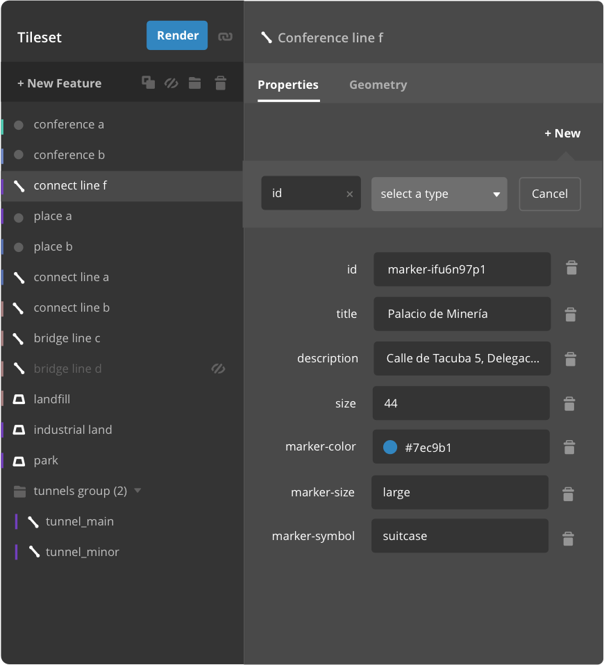
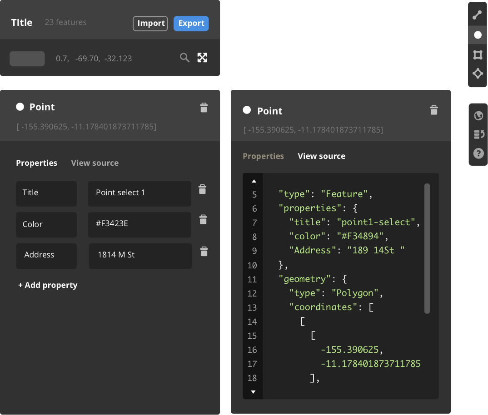
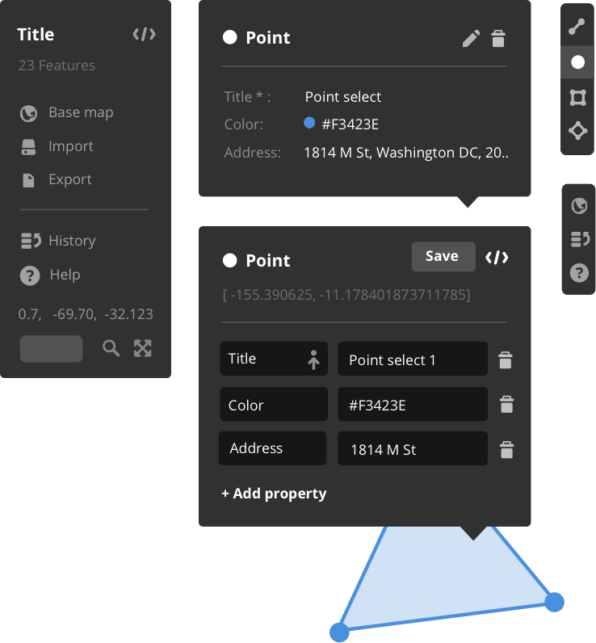
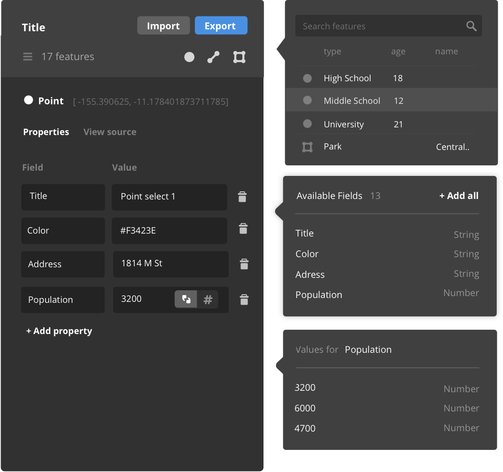
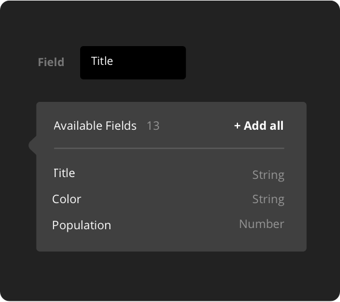
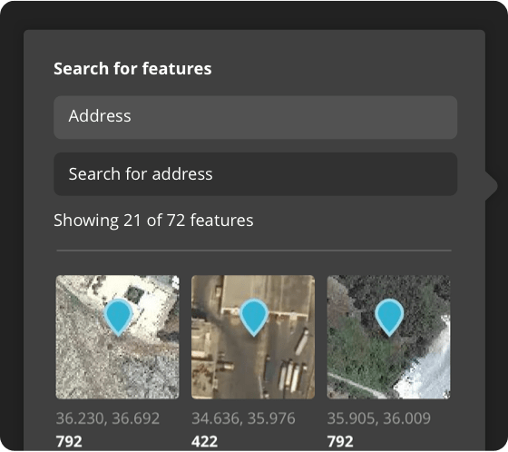

Mapbox Studio dataset editor provides a simple way to create and modify geospatial data. It stores data as GeoJSON files. GeoJSONs are essentially a list of features with coordinates, geometry and property information. Users can draw, import, edit and manage features with the editor. Traditioanl GIS software often has complicated interfaces and requires specialized training to use. We wanted this tool to be accessible to not just GIS professionals, but also designers and developers who want to create data visualizations or need custom data for their apps.
The Challenges
The most difficult part of this project is definitely prioritizing features, deciding which to build for the initial release. We wanted to provide a foundation for more complicated features down the line while maintaining a balance between simplicity and flexibility. A few main design challenges we've identified early on:
- Shared property fields. Feautures inside one dataset usually share the same set of property fields. However we don't store such information in GeoJSON files.
- Search. It was difficult to filter the dataset and find specific features.
- Precision. Spatial data is precise and we want to give users full control when it's needed.
Dataset Editor Iteration 1

Feature list and property panel

Geometry panel and multi-select
Iteration 1
Multi-select and Feature List
In early iterations of the data editor, the UI consisted of a feature list on the left, and a map view on the right. In the list every feature needs a unique identifier. This introduces a problem because a concept like "name" does not exist in GeoJSON. Creating such a concept adds significant implementation burden.
Another problem I tried to tackle here is editing the fields of multiple features at the same time. Similar to "names", the concept of "shared property fields" also don't exist in GeoJSON. Every feature can have a list of different property fields.
The question is if we want to adopt a UI that's similar to the GeoJSON structure, or diverge from it more dramatically. We took a step back and did a few user testings. We discovered that "names" don't really help people find what they are looking for. They usually associate one feature with multiple properties and its actual location on the map. Tom suggested removing the list design and simplifying the UI to focus on the main tasks: draw, import and edit.
Dataset Editor Iteration 2

Property panel and code panel

A layout variation: display editor inside a popover.
Iteration 2
Property and Code Editor
The second major iteration is mostly about simplifying. Without the feature list panel, there's a lot more space to directly draw on the map. By removing multi-select, we can focus on refining single feature edit. The "name" concept was completely removed in this iteration. Instead we used geometry type plus coordinates to represent the feature.
A big feature we added here is the code editor. Users can access it through the
view source tab. This allows for more precise control over the data, especially when people want to copy-paste coordinates. The design also reflects how the data is represented in the API level. It is a good example of how we retain flexibility and show complexity only when it's needed.Another main focus of this iteration is the draw interactions. How to start drawing, modify a node of the shape or close a shape? I sketched out some ideas and worked with Matthew to implement them in mapbox-gl-draw, the framework dataset editor uses for this interaction.

Draw interactions
Dataset Editor Iteration 3 June, 2016

Property panel

Location and feature search.

Add property
Preview existing fields in the dataset and add all fields with one click.

Add value
Show existing values for a field and the aiblity to define number or string type.

Search features
A quick to search for features based on field and value in the map context.
Iteration 3
Property Editing and Feature Search
With almost all the basic functionalities in place, we started more aggressively user-testing the tool every week. User testings at this stage helped us identify intricate problems and solve them through minimum UI changes.
The property values can be a number or string type. This differentiation is important when creating filters for visualization. I added a type toggle next to values that contains number characters only to solve the problem. We also added to a grid of small location preview images to the search UI to help users find features more quickly.

Dataset view page
An overview of the dataset and a starting point for further actions like visualization or development.

New dataset
Create a blank dataset or import from other sources.

Dataset export
Export to a new tileset or overwrite.
What I learned
Test early and often. Sometimes the problems are so intricate it's hard to believe their existance without watching another person struggling with it with my own eyes. User testing prevents us from relying too much on what have been done in the past. It helps us focus on designing practical systems that support interactions.
Design is really a team team effort, especially for a complicated product with many moving parts. In the past I often became frustrated when I could not get other people to like my work. But arguments can often bring in new perspectives. I don't need to agree with all of them but I have to understand them. It's less about winning all the battles, and more about realizing that I can not produce the best work without the people around me.
Mapbox Studio dataset editor is free and in active development. You can learn more about the tool here and start using it today!